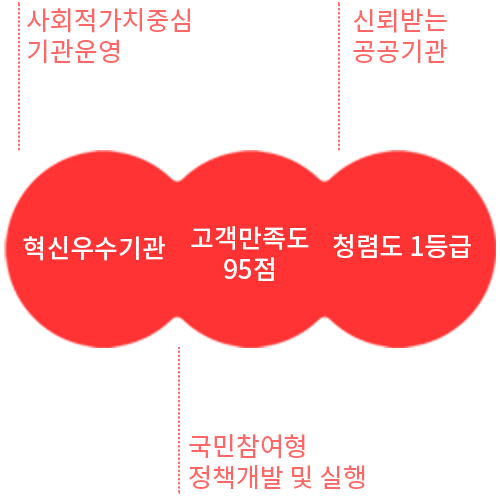

추진체계
- 국민행복과 혁신성장을 선도하는
글로벌 디자인기관
-
- 사회적가치 비전
- 디자인을 통한 사회적 가치 창출과
국민 삶의 질 향상
기본방향 및 목표(2025년)

추진전략 및 전략과제
- 일자리창출과 고용의 질 개선
: 일하고 싶은 디자인 일자리 만들기
- 01 디자인분야 민간일자리 확대 체계정비
- 02 디자인 혁신을 통한 일자리 창출
- 균등기회.사회통합주도
: 차별 없이 함께하는 조직문화 디자인
- 03 중장기 인력운영 계힉수립
- 04 차별해소 제도개선으로 성과창출
- 안전 및 환경혁신
: 안전사회,지속가능한 사회를 위한 디자인
- 05 수요자체감 안전.재난관리
- 06 지속가능한 환경에 기여하는 기관운영
- 07 신뢰할 수 있는 기관 정보보안관리
- 상생협력 및 지역발전
: 국민과 함께하는 사회 공유가치 창출디자인
- 08 지역기반 사회공헌 활동 추진
- 09 디자인계와 수요산업계 동반성장 지원
- 10 사회적 경제조직 활성화 지원
- 11 지역사회연계 프로그램 개발 및 실행
- 윤리.인권경영
: 국민인권과 윤리기반 디자인기관 운영
- 12 윤리기반 경영체계구축
- 13 인권존중을 위한 기관 중장기계획 수립
전략과제 및 추진활동
일자리창출
:일하고 싶은 디자인일자리 만들기
- 디자인분야 공공 민간 일자리 창출 확대
- 디자인 인력지원사업을 통해 기업의 경쟁력을 제고하고 디자인 산업의 활용범위 확장을 위해 노력합니다.
- 제조,스타일테크,사회적경제 기업대상 디자인인력지원,초기창업패키지 지원사업 등
- 고용 및 근로의 질 개선
- 양질의 일자리 개선을 위해 공정하고 투명하게 원칙을 준수하며 조직구성원의 근로중심에서 생활과의 균형구현을 통한 일자리 가치 향상을 위해 노력합니다.
- 공공부문 일자리 확대,비정규직 근로자 정규직 전환,저출산과 여성의 경력단절,가족 간 유대감 강화,육아휴직 보장 확대 등
- 미래 디자인 전문인력 양성
- 산업 현장의 수요를 반영하여 디자인 전문인력 양성 프로그램을 운영합니다.
- 코리아디자인멤버십 운영, 디자인융합 대학원 운영 등
환경 안전
:안전한 사회, 지속가능한 사회를 위한 디자인
- 디자인의 특성을 반영한 재난관리 및 국민안전
- 안전한 근무환경 조성을 위하여 기관의 안전 개념을 재정비하고 인식향상을 위한 예방활동을 강화합니다.
- 기관 시설물 안전관리, 안전인식 향상을 위한 안내사인 디자인 개발
- 환경보전
- 환경관련 법 규정을 준수하여 환경보전의 개념을 재정립하고이를 기반으로 기존 사업과의 연계방향을 모색하여신사업 발굴을 위해 노력합니다.
- 임직원 환경보전 활동참여, 환경보전 활동 체계 구축, 녹색제품 구매
상생협력 및 사회공헌
:공유가치 창출을 위한 디자인
- 이해관계자 참여를 통한 인권경영 문화실천
- 인권경영 조직문화의 선진화를 위하여 인권경영체계를 확립하고 활동을 강화합니다.
- 인권경영위워회구성,산업안전환경권 보장 등 프로그램 개발 및 시행
- 상생 협력을 통한 지역발전
- 지역사회 참여 프로그램을 개발하고 시행하여 지역경제 활성화를 도모합니다.
- 전통시장 및 소상공인 지원, 디자인 플리마켓(창업/영세기업),디자인 전식=대관, 디자인 무료웨딩 지원
- 동반성장체계확립
- 중소기업의 경쟁력 확보를 위한 여건을 조성하고 지속적 성장을 위하여 노력합니다.
- 디자인거점센터를 활용한 판로지원, 창업지원센터 기반 단계별 창업지원 및 창업 활성화
- 디자인산업 생태계 조성
- 디자인산업의 건강한 생태계 조성을 위하여 디자인공정거래문화를 확산합니다.
- 디자인공지증명제도, 디자인통합민원센터 운영 강화